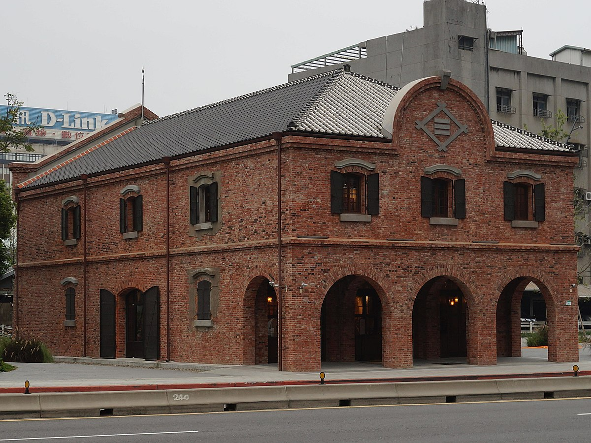
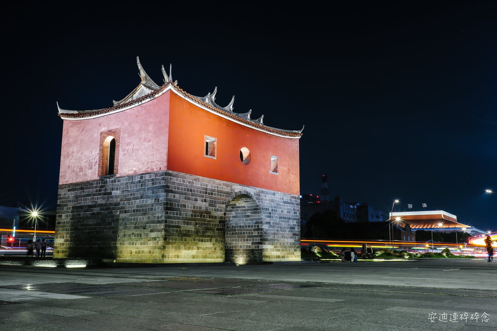

玖拾年代
台北車站-現今風貌

周圍景點-三井物產株式會社舊倉庫
該建物為日治時期三井物產之倉庫，建築年代約為1914年，為三崁式2樓磚木混合建造房屋、寄棟造屋頂，主樑木桁架跨距深遠，建物中央正背立面均設山牆。中央立面半圓形的山牆仍留有三井物產菱形商標，是目前台灣唯一保留三井物產菱形商標的建築物。
“三井物產株式會社舊倉庫（簡稱三井倉庫）是位於臺灣臺北市中正區交八廣場內的洋式建築，坐落於忠孝西路一段265號（原北門町），在日治時期由三井物產所興建。經台北市議員建議指定古蹟，2012年5月7日臺北市政府公告為臺北市歷史建築。”

小知識

臺北府城北門
北門是臺北建城的標誌性建築，但曾長期欠缺應有的史蹟與地景維護，而1978年啟用的北門高架橋（忠孝橋引道）緊貼北門旁通過，更使北門在視覺上遭到嚴重遮蔽。有鑑於此，臺北市政府在2015年啟動的都市復興計畫「西區門戶計畫」將北門的景觀重整列為重點項目之一，首先在2016年初拆除北門高架橋，同時於城門周圍打造廣場式的開放空間，期許將北門塑造為「國門」的意象，成為臺北的歷史地標。
“臺北府城北門，正式名稱為承恩門、或逕稱為北門，是位於臺灣臺北市中正區的清代城門建築，為臺北府城的正門。坐落於現今臺北市忠孝西路、延平南路與博愛路交叉口，落成於清光緒十年（1884年），為臺北府城五大城門中唯一完整保持建城時代原貌者，是臺灣新式城門的代表作，也是臺北市區僅存不多的清代建築之一。”
小知識